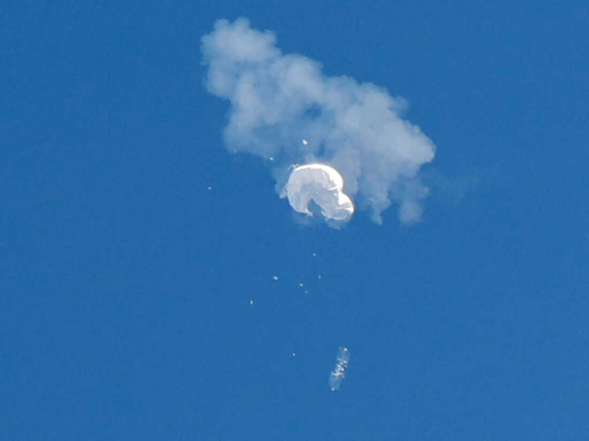

The United States Government has detected and tracked multiple high altitude surveillance balloons over the continental United States. The U.S. government, to include NORAD, continues to track and monitor airspace. Once the balloon was detected, the U.S. government acted "immediately" (waited for the balloon to cross the entire country) to protect against the collection of sensitive information.